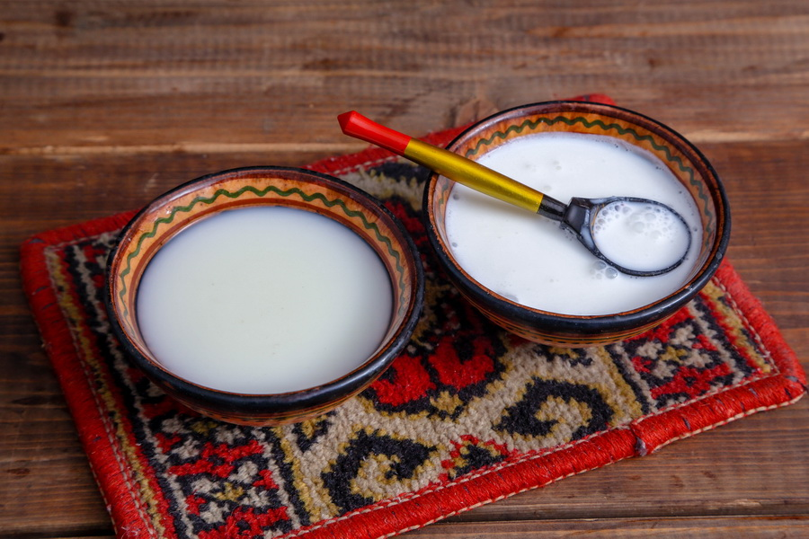

Kostanay (科斯塔奈)
库米斯
库米斯是一种由马奶制成的非常健康的饮料。 事实证明，它有助于治疗胃炎、肺结核、心血管等疾病。 马奶含有多种维生素：硫胺素 (B1)、核黄素 (B2)、维生素 B12、生物素、维生素 C、叶酸和泛酸。
菜品评分
Design by 得力 2022
库米斯是一种由马奶制成的非常健康的饮料。 事实证明，它有助于治疗胃炎、肺结核、心血管等疾病。 马奶含有多种维生素：硫胺素 (B1)、核黄素 (B2)、维生素 B12、生物素、维生素 C、叶酸和泛酸。